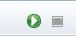
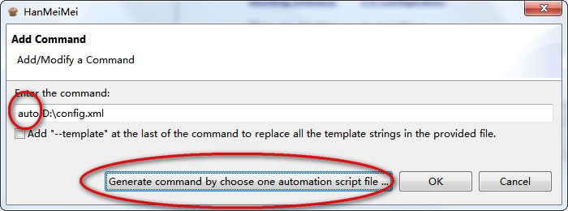

HanMeiMei Automation System Quick Start
Component 1: Run Commands
This component provides you the ablility to run several shell or cmd commands together automatically.
you can add commands to the list by clicking the Add Command Hyperlink. The command can also by modified by right click one item of the commands list.
After you added the commands, you can click the Run Commands menu to start them.
The command line output will be shown at console window.
Component 2: Template Variables
Template variable is used to replace the string path of commands.
This machenism can be used to easy the deployment of the same commands across different machines with different paths.
There is two default built in template variable ${HMMDIR} and ${BUILD}
For example, if you set ${HMMDIR} like this:
Then if you add following command:
The cd ${HMMDIR} at runtime will be automatically replaced to cd C:\HanMeiMei.
Template variable can be added by click the Add Template Variable hyperlink. It can also be modified by right click one item in the template variable list.
When adding command, if the command is with the --template suffix, and the command is a batch file, all the template variables inside the batch file with be replaced to the real value during runtime.
For example if we have a batch file psy.bat, which contains:
echo ${my}
The ${my} is defined in template variable list:
and we specify the batch file with --template when adding the command:
The output would be:
Component 3: Scheduled Build
The HanMeiMei automation system can be configured to be a Server, or Client, the default is Server.
Server: Takes the role as a dispatcher, Clients obtains source code from server through the FTP software on the server machine.
Clinet: May be installed on several different machine with different OS, communicate with server to download the source code on server machine for build.
When a scheduled build is started, the client does following:
1. Communicate with the server to obtain the FTP credentials.
2. Download source codes from server machine's installed FTP software with the obtained credentials.
3. Run the configured commands to build.
The Server only does the No.3 procedure above.
The Scheduled Build Time is used to schedule a build at a specified time.
The Working Directory is used to change the template variable ${HMMDIR}, which is the root directory where the client download source files into.
The FTP Configuration is used to set up ftp credentials on server, so that client can obtain these information from server.
After all these settings are done, from the menu, you can click the Schedule command to make the scheduled build enabled.
IMPORTANT NOTES:
The server machine must install a ftp server software, ftp credentials configured in FTP Configuration should be the same credentials configured in the ftp server software.
The client only gets ftp credentials through HanMeiMei software on server machine, after that client directly talk to the ftp server software to download source files.
The source files need to be built must be all contained in a folder, here we call it Build Folder.
The name of the Build Folder must follow the pattern yyyy-MM-dd_HH_mm_ss, which is the default value of template variable ${BUILD}.
For example, the name of the Build Folder can be 2012-11-12_13_14_15
If the Build Folder is on server, the parent folder of the Build Folder must be set to the root folder of the ftp server software.
Whenever client connects to the ftp server software, client will find the latest Build Folder and download it under ${HMMDIR}
When you want to add a command to call a batch file inside the Build Folder after download completed, you can use ${HMMDIR}\${BUILD} to get the path of Build Folder.
Component 4: Web Automation
For this initial 0.1 Release, there is some web automation facilities, but is inadequate to do a full set web automation test.
The computer runs HanMeiMei web automation must have firefox installed.
From the menu, choose New to create a new automation configuration, choose Open to open an exist automation configuration file.
Press the Web button on the toolbar of Automation Editor to add top level elements to the tree view list.
Find is used to find a html element on a web page.
Navigate is used to navigate the web browser to show page from desired url.
Wait is used to suspend the web automation thread for a certain time.
Currently Only the Find element can have sub elements:
Input is used to input some text into the html element if this element allows input.
Submit is used to perform submit behavior of an html form which current element is contained in.
Click is used to perform a click operation on current element.
Text is used to get the text value of a web element and set the retrieved value to a Variable logic element.
Select is used to select a html checkbox or radio button inside current element.
All these automation configurations requires the user have html knowledge, at least he should know the id of the html element he wants to operation.
Here is a simple configuration for automatically open google and search for word eclipse:
You can start to run the configuration by clicking:

or save it to an xml from menu:
Also the saved xml file can be directly runned as a command together with other commands.
The prefix keyword auto is used to identify the file is an automation configuration file.

The automation configuration script file execution result will be shown on the console window.
You can switch the console window between Command Message Output and Automation Message Output.
The web automation uses library Selenium, provided by ThoughtWorks, you can get more information about Selenium here:
For 0.2 Release, The Logic Configuration has been added, below figure describs a scenario:
Here is the corresponding response:
Here I don't want to say more about how to use Logic Configuration to generate test logic, this is easy to discover by yourself.